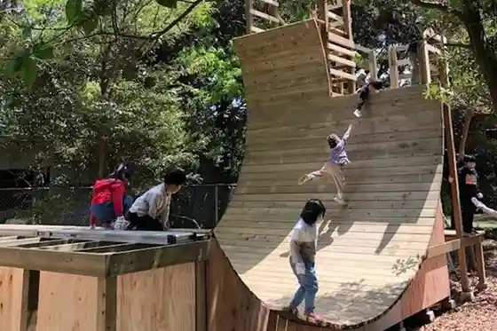
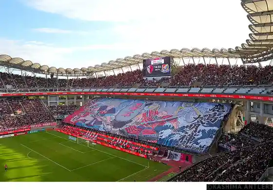
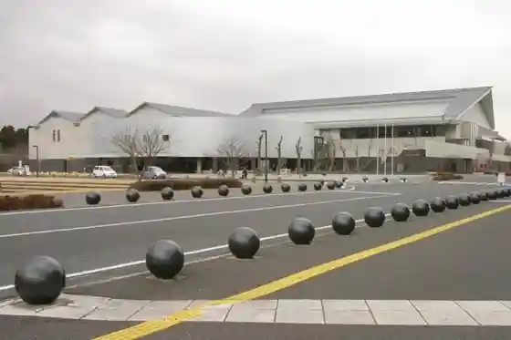
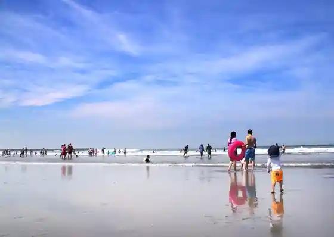

Kashima Shrine
Kashimashi, Ibaraki · 0299-82-1209 · Official / source link
Mori no Asobiba Shika Suke
Kashimashi, Ibaraki · 080-4810-0039 · Official / source link

Merukarisutajiamu / Prefectural Kashimasakkasutajiamu
Kashimashi, Ibaraki · 0299-84-6622 · Official / source link

Kashimashi Ritsu Kashimasupotsu Center
Kashimashi, Ibaraki · 0299-83-1600 · Official / source link

Hirai Beach
Kashimashi, Ibaraki · 0299-82-2911 · Official / source link

Kashima Haitsusupotsu Plaza
Kashimashi, Ibaraki · 0299-82-7941 · Official / source link
Kashima Minato Uotsuri Sono
Kashimashi, Ibaraki · 0299-94-5012 · Official / source link
Shiosai Hamanasu Park
Kashimashi, Ibaraki · 0299-69-4411 · Official / source link
Nihonsei Tetsu (Kabu) Higashinihon Seitetsusho Kashima Chiku
Kashimashi, Ibaraki · Official / source link
Tsukahara Bokuden no Zo
Kashimashi, Ibaraki · 0299-82-7730 · Official / source link
Kisetsu Ryori Shiki Tei
Kashimashi, Ibaraki · 0299-82-5511 · Official / source link
Kashima Shiroyama Park
Kashimashi, Ibaraki · 0299-82-7730 · Official / source link
Wafu Resutoran
Kashimashi, Ibaraki · 0299-83-1221 · Official / source link
Yakiniku Ushiwakamaru
Kashimashi, Ibaraki · 0299-90-8929 · Official / source link
Kamome So
Kashimashi, Ibaraki · 0299-84-0696 · Official / source link
Ibarakiken Saibai Gyogyo Center
Kashimashi, Ibaraki · 0299-83-3015 · Official / source link
Pateisurii Momburan
Kashimashi, Ibaraki · 0299-82-9377 · Official / source link
Kin San Ie (Kimu Sanchi)
Kashimashi, Ibaraki · Official / source link
Izakaya Shuko Iori Hitoshi Warai Mon
Kashimashi, Ibaraki · 0299-84-6113 · Official / source link